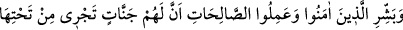
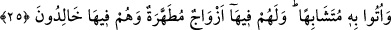

25. İman edip iyi davranışlarda bulunanlara, içinden ırmaklar akan cennetler
olduğunu müjdele! O cennetlerdeki bir meyveden kendilerine rızık olarak
yedirildikçe: Bundan önce dünyâda bize verilenlerdendir bu, derler. Bu rızıklar
onlara (bâzı yönlerden dünyâdakine) benzer olarak verilmiştir. Onlar için cennette
tertemiz eşler de vardır. Ve onlar orada ebedî kalıcılardır.
“Beşâret”; birisine deride etkisi görülecek kadar sevindirici bir haber ulaştırmak ve
müjde vermek demektir. Yâni ey Muhammed! Kur’ân’ın Allah katından geldiğini haber
vermekle mü’minlerin gönüllerini ferahlandır. Âyetteki “müjdele” emri Hz.
Peygamber’edir. Ama bu emrin, teblîğ görevini üstlenen herkesi muhâtab aldığı da
söylenmektedir. Nitekim Rasûlullah (s.a.): “Gece karanlığında mescidlere gidenleri,
kıyâmet günü tam bir nûrla müjdele!”[218] buyurmuş, fakat bununla belli bir şahsı değil
bu işi yapabilecek herkesi kasdetmiştir.
“Sâlih amel”; sırf Allah rızâsı için yapılan işlerdir. Hayırlı ve yararlı işler yapmanın
îmâna atfedilmesi, îmân ve amelin birbirinden ayrı iki şey olduklarına işâret etmektedir.
Fakat bir kimsenin cennet ile müjdelenmeyi hak edebilmesi için bu ikisini birleştirmesi
gerekmektedir. Zira, îmân temel, sâlih amel de o temel üzerine inşâ edilen binâ gibidir.
Üzerine binâ yapılmayan temel bir işe yaramaz. Amel yapmadan cennete tâlib olmak
akılsızların işidir. Çünkü Allah Teâlâ ameli, cennete girme vesîlesi kılmıştır. Her ne
kadar Allah, kulu mücerred îmân ile cennete soksa da, amel mü’minin îmânını artırır,
kalbini nûrlandırır.
Kul, cennete ulaşıncaya kadar, pek çok sarp yokuşlardan geçer. Bunların ilki, îmân
yokuşudur. Îmân yokuşunun aşılıp aşılamıyacağı yâni îmânın kişiden selbolunup; alınıp
alınmayacağı kimse için belli değildir. Bu yüzden bu yokuşu aşabilmenin kolaylaşması
için sâlih amel vâsıtasına sarılmalıdır.
İşte yâ Muhammed! Anlatıldığı üzere inanıp sâlih ameller işleyenleri altlarından
ırmaklar akan, içinde meyveli ağaçların bulunduğu cennetlerle müjdele!
“Cennet”; içerisinde hurma ağaçları, “Firdevs” üzüm bağları bulunan bahçelere
verilen isimlerdir. Ferrâ böyle demiştir.
“Cennet”in bu adla anılması ağaçlarla kaplı bulunması ve ağaçların dallarının
birbirleriyle sarmaş dolaş olması sebebiyledir. Sanki cennet, yemyeşil tek bir örtüyle
kaplı bir yer gibidir. Cennette ağaçlardan başka köşkler, saraylar ve anlatılması
imkânsız pek çok nimetler vardır. Bu nimetlerin temelini ve büyük bir bölümünü her
çeşitten meyve ağaçlarından oluşan ve içinden ırmaklar akan bahçeler oluşturduğu için,
mükâfat yurdu’na “cennet” ismi verilmiştir.